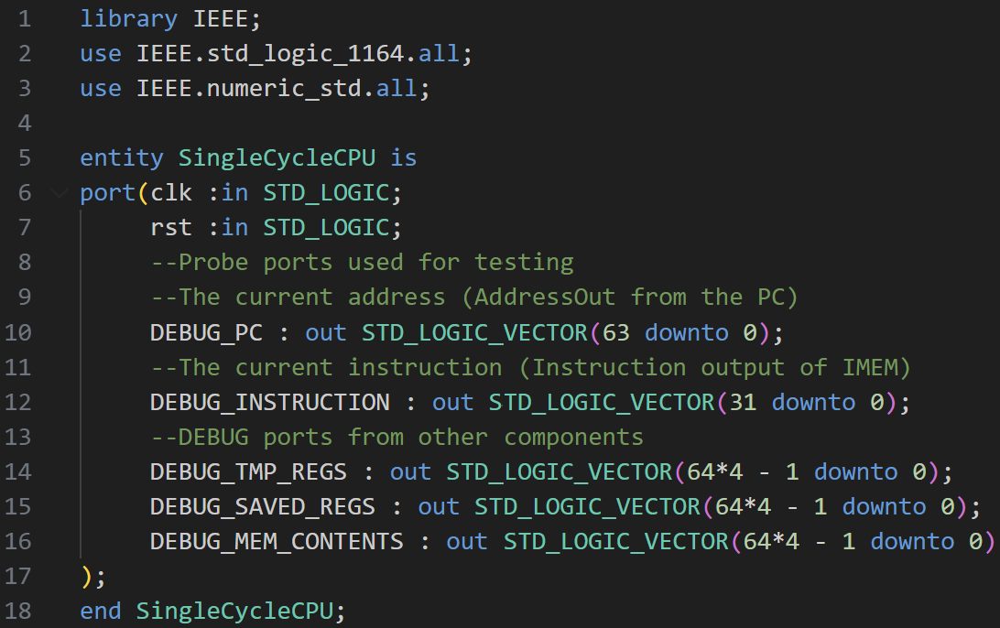
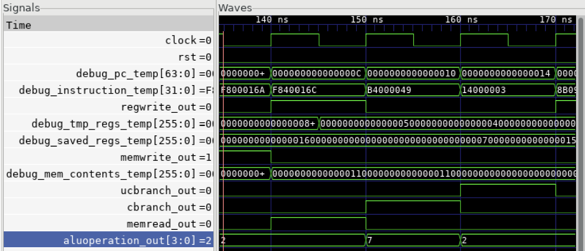

Project mission: engineer a complete five-stage pipelined processor from scratch — implementing hazard detection and data forwarding entirely in VHDL.
Overview
As the term project for my Computer Architecture course, I designed and implemented a simplified ARM-like processor using VHDL. The processor supports a subset of ARM instructions (specifically LEGv8), including arithmetic operations, memory access, and control flow.
The project began with the foundational components — PC, instruction and data memory, register file, and ALU. I first wired these together into a single-cycle architecture to validate basic functionality before transitioning to a pipelined design. That shift introduced challenges around instruction dependencies and timing, which I addressed through hazard detection and data forwarding.

Pipelining the datapath
The pipeline follows the classic five-stage approach: Instruction Fetch, Instruction Decode, Execute, Memory Access, and Write Back. Each stage operates concurrently with the others, creating a processing pipeline that can theoretically complete one instruction per clock cycle. The real complexity comes from data hazards — situations where instructions depend on results from previous instructions still moving through the pipeline.


Verification
Verification involved developing comprehensive testbenches that could automatically validate processor functionality across various instruction sequences. Using GTKWave for waveform analysis, I could observe signal propagation through each pipeline stage, verify timing relationships, and debug the complex interactions between hazard-detection logic and data forwarding.
Image credits
- Single-cycle architecture diagram: Patterson, David A., and John L. Hennessy. Computer Organization and Design — The Hardware/Software Interface (Arm® Edition). ISBN 978-0-12-801733-3.
Textbook diagram used for educational purposes under fair use. Code screenshots and simulations are personal development work.